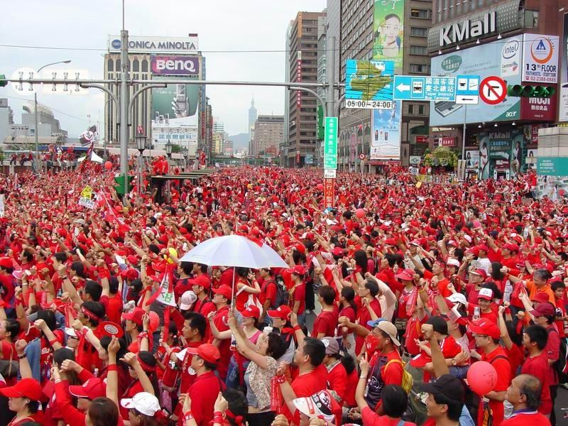

27 公投：民主或操弄
英國脫歐提醒：公投是工具，制度設計決定它是民主還是情緒按鈕。

瑞士公民對已通過的法律，可在期限內連署啟動公投否決。門檻相對公民總量並不天文。擔心公投造成不穩定的人，被要求去看看瑞士：高權力與高所得可以並存。
2016 英國脫歐公投：大笨鐘下的決定，至今仍是「民主勝利」與「民粹操弄」的平行敘事。
公投題目的寫法、資訊對等、門檻、是否有有拘束力、與議會如何接力，決定結果是深思還是情緒。
台灣的公投經驗與兩大黨結構，使制度改革困難，但並非沒有空間：把公民權力向可操作、可驗證的方向調，而不是只在動員季出現。
民主的成熟度，常表現在：我們敢不敢把刀給人民，又有沒有把刀柄設計好。

來源: 台灣大未來 — 今日瑞士，明日台灣 — 張渝江 · 7. 區塊鏈與選舉、內政